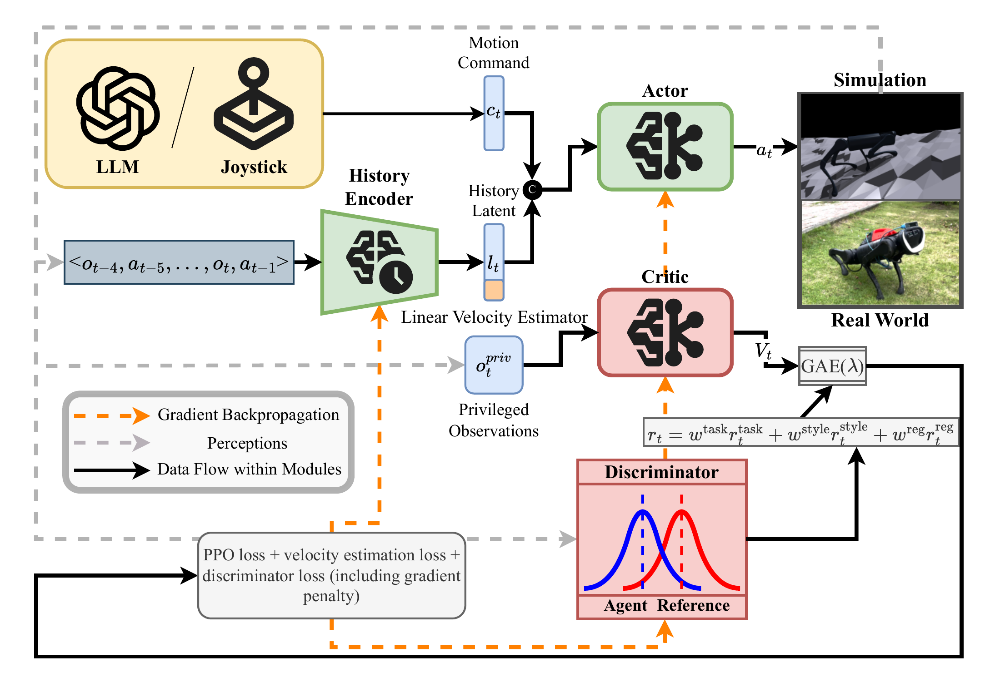

Video
Abstract
Recent advances in embodied intelligence have opened new directions for autonomous agents to operate in complex physical environments. In this work, we propose a Posture-Aware Locomotion Agent (PALA) trained via deep reinforcement learning. Unlike traditional quadruped agents that focus solely on velocity tracking, our agent learns to track task-oriented 6D motion commands, including linear and angular velocities, as well as desired body posture (height, pitch, and roll), in real time using only proprioceptive sensing and external commands. To improve robustness and terrain adaptability, we introduce two key heuristic designs: a progressive reward curriculum and an orientation command resampling strategy. Combined with asymmetric actor-critic training, adversarial motion priors, and domain randomization, these components enable a single policy to generalize zero-shot across diverse and challenging environments. Additionally, we extend PALA to handle high-level instructions by integrating it with an autonomous agent powered by a large language model (LLM), enabling natural language task descriptions to be directly translated into executable 6D commands. Extensive simulation and real-world experiments demonstrate the responsiveness and accuracy of our posture-aware locomotion agent, underscoring its potential as a core component for embodied systems operating in unstructured settings.
Method Overview
One policy for velocity and posture control, from simulation to the real world.


BibTeX
@inproceedings{miao2025pala,
author = {Miao, Xiangyu and Sun, Jun and Lai, Hang and Di, Xinpeng
and Cao, Jiahang and Yu, Yong and Zhang, Weinan},
title = {Learning Embodied Quadruped Agents for
Posture-Aware Locomotion},
booktitle = {The Seventh International Conference on
Distributed Artificial Intelligence},
series = {DAI '25},
year = {2025},
publisher = {Association for Computing Machinery},
doi = {10.1145/3772429.3772430},
url = {https://doi.org/10.1145/3772429.3772430}
}